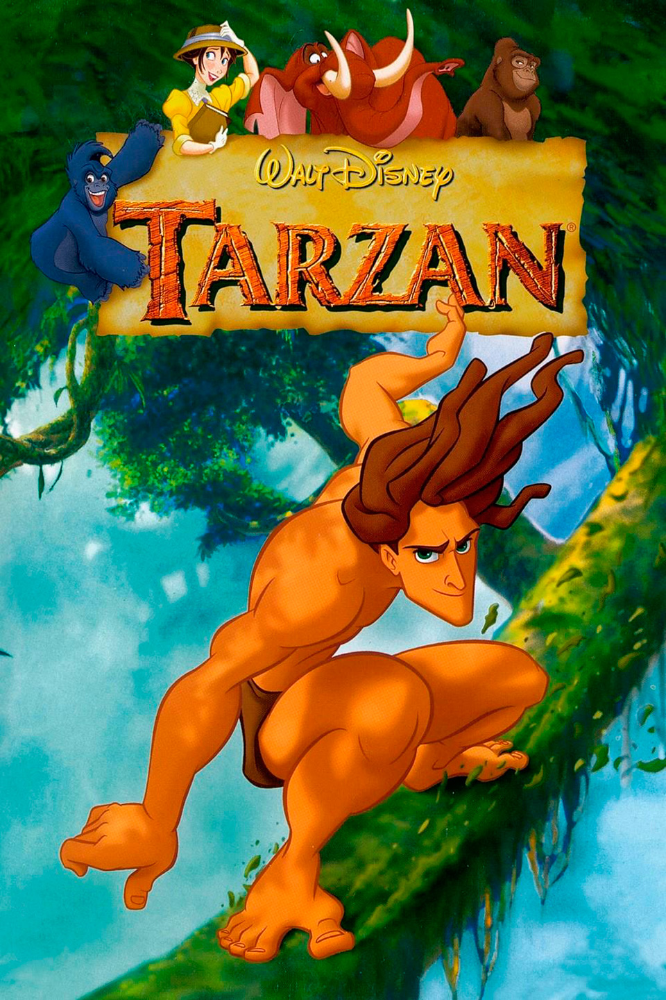

Tarzán (1999)
Siendo ésta la última del “Renacimiento de Disney”.
"La gorila Kala encuentra un niño huérfano en la jungla y lo adopta como su propio hijo a pesar de la oposición de Kerchak, el jefe de la manada. El joven Tarzán crecerá en la jungla desarrollando los instintos de los animales y aprendiendo a deslizarse por los árboles a una gran velocidad. El joven vive como un animal hasta que una expedición se adentra en la jungla y conoce a Jane, que le hará descubrir quién es realmente y cuál es el mundo al que pertenece."
